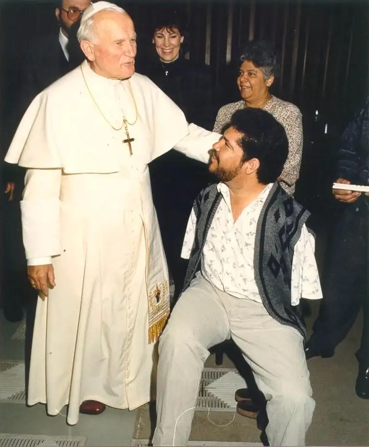

BRANSON, Mo. — There’s a reason Tony Melendez named his music ministry Toe Jam Music.
Born without arms due to an anti-nausea drug his mother was given while pregnant, Melendez plays guitar with his toes.
And soon, he’ll be in North Dakota to lead a parish mission, with his feet, faith and family at the forefront.
“I’ve known Tony for over 20 years, and each time I hear him speak, it is different and very inspiring,” says Barb Stangeland, coordinator of the event, who notes that his manager-brother, Jose, will join him, too, as well as, more unusually, his wife Lynn.
Originally from Rivas, Nicaragua, Melendez and his family moved to the United States when he was only 1 to have corrective surgery on his left foot, which was clubbed, to enable him to walk.
When he was 16, he taught himself to play guitar with his toes, and in 1987, at age 25, the youth of Los Angeles asked him to be their gift to Pope John Paul II during his visit to America.
After hearing him perform, the pope, visibly moved, jumped off the stage where he was seated and approached Melendez in front of the crowd, whispering words of encouragement that he use his gift to bring hope to others.
This set Melendez on a new path, which has included, visits to all 50 states and more than 44 foreign countries over the last 30 years. This won’t be his first visit to North Dakota, and, despite a different landscape and climate from his own — Melendez and his family now live in Missouri — he says he enjoys the area — including the cornfields, straight roads and, yes, even the windy winters.
“It’s very beautiful,” he says. “And the people have always received me very warmly. They’ve invited me back, and I feel grateful to go.”
Like the late pope, Melendez has a heart for the youth. “The younger generation gets such a bad rap. People say they’re lazy, they’re drug addicts,” he says, but he sees something different up close. “When the pope kissed me, it was like he was embracing all of the youth.”
Melendez ended up being in the pontiff’s presence six more times before his death, mainly at World Youth Day gatherings throughout the world. He describes him as being “almost like a grandfather.”
“Four of the times I was close enough to get to greet or embrace him,” he says. “He just had a charisma that was very uplifting, moving. Even if there were a million people there, they’d all say, ‘Hey, he looked at me!'”
Melendez’s upcoming trip to Valley City will include visits with college students at Valley City State University, as well as the elderly and youth.
Chairperson Carol Jabs says Melendez, whom she’s seen perform one other time, conveys well “his obvious love for the Lord in his music and what he talks about during his performance. He gives his parents and family a lot of credit for helping him become who he is. He’s a very humble man, very approachable.”
The mission’s theme is, “Be the New Evangelist for Our Church.”
“He’s a great speaker for all ages,” Stangeland says. “If you’ve got school-aged kids, come out for an evening with them.”
She adds that Melendez is, above all, a storyteller, and often also addresses such themes as bullying and living with a disability.
Melendez admits that in the beginning of his career, he wasn’t clear what God really wanted of him. “I eventually realized that when people see me, they think, ‘If he can do it, I can do it,” he says.
During the mission, he’ll reintroduce the word that seems to be the defining one for him, and others.
“It’s almost like it’s imprinted on my forehead, this word ‘hope,'” he says. “People see a guy with no arms and think that I’m suffering, but I have never had arms so I have never suffered that pain. But they put it in their perspective and relate it to their lives.”
His performances, he says, bring something edifying to him as well.
“When I’m playing my guitar with my toes and singing, something happens between where I’m at and where the person is. Some might be sad — there might be little girls crying, ‘He doesn’t have hands.’ But others cry for a whole other reason, ‘I can do this now!'” he says. “I love those moments people have shared with me or when I just visually see it.”
“Hope has no age,” he continues. “From even the littlest child to the oldest, we all need a little hope, a little glimmer of light that will shine for us during the darkest times in our hearts.”
If You Go:
What: Lenten mission featuring Tony Melendez
When: 6:30 p.m., Sunday through Thursday, March 19 to 23
Where: St. Catherine of Alexandria parish, 540 3rd Ave. NE, Valley City
Cost: Free-will offering, all ages welcome
Contact: Barb at stkates100@gmail.com or call 605-692-2946
Online: Tony’s 1987 performance for Pope John Paul II: https://www.youtube.com/watch?v=zlZPYGBXQ44, or visit www.tonymelendez.com